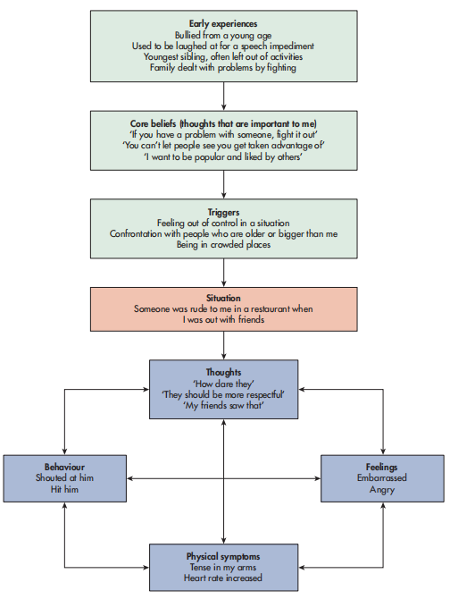

🚔 CHAPTER 8: UNDERSTANDING THE OFFENDER
理解罪犯：认知访谈与个案概念化
1. Learning Objectives（学习目标）
⚡ Quick Summary — 本节要学什么
A crime has happened. The police need answers to two very different questions: 「What happened?」 — asked to the witnesses; and 「Why did this person do it?」 — asked about the offender. This chapter gives you one psychological tool for each question.
🎯 By the end of this chapter, you should be able to describe and evaluate (spec 6.1.2 + 6.1.3):
- The cognitive interview（认知访谈）as it is used on witnesses — its two memory foundations, four techniques, the enhanced version, and the evidence for and against it.
- Psychological (case) formulation（心理个案概念化）of offending behaviour in the individual — offence analysis, criminogenic factors, core beliefs, and how a formulation is built and judged.
2. Getting Started — You Are the Officer（开局思考：你是办案警官）
⚡ Think about this before you read on
Read this extract about a crime from a newspaper.
📰 The City Bank robbery（课本 Getting Started 原文）
On Monday morning, the ordinary calm of the city was shattered when a group of masked individuals stormed into the City Bank in a daring bank robbery. The individuals were dressed in dark clothing, with concealed faces and armed with a variety of weapons. The customers were making their everyday banking transactions when the robbery took place. The menacing robbers herded the customers and staff to the back of the bank. The chaotic scene was commanded by a ringleader who created an air of fear. The robbery took place with precision and meticulous timing, as the criminals breached the bank's vault and filled their bags with stacks of currency. The criminals left swiftly, leaving behind trembling customers and bank staff unsettled by their ordeal. This brazen robbery occurred in daylight and the bank was surrounded by commuters travelling to work. Within minutes of the criminals disappearing on foot through the city streets, law enforcement officers arrived, swarming over the bank and gathering together the witnesses.
Your task: imagine that you are police officers involved in gathering witness testimony. Write down seven questions that you will ask the witnesses about the crime. Then think about what you have learned about reconstructive memory（重构记忆）— would any of your questions mislead the witness or activate schemas that might alter the answers given? How could you change your questions to make them better?
3. Why Standard Interviews Fail — The Two Memory Foundations（两大记忆原理：全章的逻辑地基）
The textbook jumps straight to the four techniques — but every technique is derived from two ideas about how memory works. Master this section and the four techniques stop being a list to memorise and become a logic you can reconstruct.
KEY TERM — cognitive interview（认知访谈）：The cognitive interview (Fisher and Geiselman, et al., 1984) is a specific way of asking a witness questions about an incident. It is designed to maximise the accuracy of the information obtained.
Why accuracy matters so much：If inaccurate information is taken during a police interview, the wrong person may be charged with an offence, leading to a wrongful conviction（冤枉定罪）. This also means that the actual offender has got away with the crime. Or it could mean that an offender has to be acquitted（被判无罪）of a crime because their testimony is found to be unreliable.
🏦 Before the cognitive interview: the standard interview（标准访谈）
Before the development of the cognitive interview, standard interviewing typically involved a police officer asking a witness specific questions about what they had witnessed. The standard interview mainly consisted of 'who, what, when, where?' type questions, with the interviewer directing the flow of the conversation（由警官主导对话节奏）. Psychologists have worked with the police to develop the cognitive interview using their knowledge of how memory works.
The cognitive interview is based on two principle concepts of cognitive psychology（认知心理学的两大原理）:
- Memory for an event is not a faithful account（记忆不是忠实录像）of what was actually witnessed, as described by Frederick Bartlett's (1932) reconstructive memory theory（重构记忆理论）.
- When we experience an event we encode all of the details about the environment/context（我们编码了环境的一切细节——sights, sounds, smells）and the emotional state we were in at the time of the event. This is based on Endel Tulving's (1974) context-dependent memory（情境依赖记忆）. Reinstating the context or state we were in can act as a cue to the memory（提取线索）.
4. The Four Cognitive Interview Techniques（认知访谈四大技巧）
There are four main techniques used within the cognitive interview, as guided by Geiselman et al. (1985). Each card below follows the same logic: What you do → Why it works → Which foundation it comes from.
Reinstate the context / state（重建情境）
What you do：Encouraging witnesses to mentally recreate/relieve the event（在脑中重建案发场景）— such as how they felt, the weather, smells, time of day, etc. This helps to put the person back in time to the incident.
Why it works：It may improve recall because context and state cues may jog their memory of the incident. This supports cue-dependent memory（线索依赖记忆）— the Tulving foundation.
Report everything（报告一切）
What you do：Allowing the witness to freely recall a narrative of the situation — an initial account without interruption. The interviewer will encourage the witness to report everything, even if it seems trivial or unrelated to the event.
Why it works：There is scope for the interviewer to ask further questions to clarify significant moments for more detail. Witnesses may exclude details they feel are irrelevant or trivial, but these unimportant details can act as a memory cue for key information about the event — again the cue logic (Tulving).
Change the order（改变顺序）
What you do：Recall the event in reverse or a different order, not the order in which it happened.
Why it works：As we tend to remember situations in the order in which they happened, we are more likely to reconstruct a story and draw on an existing schema（按套路「讲故事」）. This 'story telling' can result in a witness embellishing the story or filling in gaps in the narrative with their schema, which can result in unreliable testimony. Recalling events in reverse or a different order can help to interrupt schema activation and prevent story formation — the Bartlett foundation.
Change the perspective（改变视角）
What you do：Try to adopt the viewpoint of a different witness — for example a prominent character in the incident (e.g. the bank's ringleader, a security guard).
Why it works：It can encourage recall of events that may otherwise be omitted, and discourage the witness from drawing on their own schema of what they would expect to have happened. It has to be made clear that the witness only reports what they know, and not what they think the other person would have seen.
5. Running the Interview — From Free Recall to the Enhanced CI（访谈怎么跑：从自由回忆到增强版）
Four techniques alone are not a script. The textbook describes how a real interview flows — and then a fuller version called the enhanced cognitive interview.
The flow after the first testimony（首次陈述之后怎么做）
To ensure accurate information is obtained, the police officer undertaking the interview should first establish a good rapport with the witness（先和证人建立信任关系）. Then the witness should be encouraged to report everything without being interrupted. Once the witness gives their initial testimony, the interviewer should ask questions that are aimed at clarifying details from the testimony. They should use techniques such as mentally reliving the incident, or recalling it from a different order. The interviewer needs to ensure that they do not ask leading questions（诱导性问题）that provide a hint about a desired answer. They should ask open questions（开放式问题）that do not imply a specific answer and encourage free recall（自由回忆）.
KEY TERM — the enhanced cognitive interview（增强认知访谈）：The enhanced cognitive interview (Fisher and Geiselman, 1992) uses the same techniques as the cognitive interview, but incorporates more techniques. The main aim is to support the witness through reliving the event and ask questions appropriate to the witness's intellectual level（匹配证人智力水平）while minimising distractions（减少干扰）.
The first phase involves establishing a personal connection with the witness before they are asked to report everything they experienced. The context reinstatement and change order techniques are supported by open questions suitable to the intellectual level of the witness, taking into account their social and cultural background（考虑证人的社会文化背景）. The approach is intended to be witness-led（由证人主导）, rather than controlled by the interviewer; however it requires significant training in interpersonal skills（需要大量人际技能训练）.
🎙️ Be the interviewer · 你来当访谈官，帮 Rhys 回忆偷窃案 亲身体验
这是本章的「eyes test 时刻」——你亲手上场。案情：百货公司发生偷窃，Rhys 当时在场，看到一个女的冲出商店、被保安追赶。你是警官 Olivia，要对 Rhys 做认知访谈。每一轮选出你认为最好的一问——注意：有些选项是 leading questions（诱导性问题），选了它会污染证人的记忆。四轮选完看你的访谈水平评级。
✍️ Activity 1 — Rewriting your seven questions（课本 Activity 1）
Go back to the Getting Started feature at the beginning of this chapter. Reread the extract of the bank robbery and consider what questions you would ask the witnesses if you were using the cognitive interview techniques described. 逐条改造你开局的 7 个问题：封闭问题 → 开放问题；具体追问 → 先 report everything；顺序提问 → 试试倒序或换视角。改完的每一问都应该能说出「它用了哪条技巧」。
6. Evidence for the CI — Geiselman et al. (1985)（关键证据）
Does the cognitive interview actually beat the standard interview? Geiselman and colleagues put it head-to-head with two rivals.
Geiselman et al. (1985) — CI vs standard interview vs hypnosis
Sample：89 undergraduate students from the University of California.
Materials：Participants were shown a film of a violent crime lasting around four minutes. The film depicted one of: a bank robbery, a liquor store holdup, a family dispute, or a search through a warehouse — during which at least one individual was shot and killed.
Interviewers：Each participant was interviewed by one of 17 interviewers recruited from a variety of professions: police detectives, Central Intelligence Agency investigators, polygraph specialists and private detectives. Each interviewer had completed a forensic hypnosis course and had field experience on hundreds of cases.
Procedure：48 hours after watching the film, each participant was interviewed using one of three interview techniques:
- Standard interview — asked to give a report of what they witnessed, then the interviewers asked them questions about their report as they normally would.
- Hypnosis — first asked to report what they witnessed, then were hypnotised and asked questions about their report.
- Cognitive interview — interviewed using the four CI techniques: report everything, reinstate context, recall the event in different orders, change perspectives.
Measures：The number of correctly and incorrectly recalled items were recorded, as well as items that were confabulated（虚构的）— KEY TERM: confabulated = falsely recalled（把没发生的事当真回忆出来）.
Results — Table 8.1: average number of items recalled（三种访谈的平均回忆量）
| Average number of items recalled | Hypnosis interview | Cognitive interview | Standard interview |
|---|---|---|---|
| Correct items（正确条目） | 38.00 | 41.15 ← 最高 | 29.40 |
| Incorrect items（错误条目） | 5.90 | 7.30 | 6.10 |
| Confabulated items（虚构条目） | 1.00 | 0.70 ← 最低 | 0.40 |
🎯 Conclusion（课本结论原文拆解）
They concluded that recall using the cognitive interview was significantly better than using a standard interview (Table 8.1). They also reported that hypnosis may have been effective because participants would have been encouraged to mentally recreate the context of the crime. There was no significant difference in errors made between the interview types. This suggests that the memory techniques employed during the cognitive interview facilitated better recall.
读表三步法：① 看 correct —— CI 41.15 > hypnosis 38.00 > standard 29.40，CI 赢在「量」；② 看 confabulated —— CI 0.70 是三者中第二低（standard 0.40 最低，但它总量也少）；③ 看错误率 —— 三种访谈错误数差不多（5.90 / 7.30 / 6.10），所以 CI 的优势不是「瞎猜多了」，而是真材实料多了。
7. More Evidence — Real Crimes, Meta-Analysis and Children（更多证据：真实案件 · 元分析 · 儿童）
One lab study is never enough. Three further studies test the CI outside the lab — and one reveals a surprising limit.
Fisher et al. (1989) — does it work in real policing?
Other studies have shown a positive effect on recall when using the cognitive interview in more ecologically valid settings, such as in relation to real crimes. Fisher et al. (1989) found that after training, detectives gained as much as 47 per cent more useful information from witnesses to real crimes compared to untrained officers.
📌 Exam tip（课本原文）：In the exam, you could be asked to 'justify' the use of the cognitive interview. You can use this research to justify the use of the cognitive interview by police and demonstrating how it can improve witness recall.（'justify' = 甩研究证据：Fisher 1989 的 +47% 就是现成的弹药。）
Gunter Köhnken et al. (1999) — the big meta-analysis
Köhnken et al. (1999) conducted a meta-analysis comprising 42 studies (involving 55 comparisons) of the effects of the cognitive interview and standard interview on correct and incorrect recall. From an analysis of the outcomes of 2,447 interviews, the cognitive interview yielded significantly more correctly recalled details than the standard interview.
They also found that more incorrect details were reported from a cognitive interview compared to the standard interview, although this effect was smaller than the comparison of correctly recalled details. Further analysis looking at the overall accuracy rate（总体准确率——correct details relative to the total number of details recalled）found that the cognitive interview generates significantly more information being recalled and that this is no less accurate than the standard interview.
Robyn Holliday (2003) — the age limit（儿童身上的意外发现）
Holliday (2003) examined the usefulness of the cognitive interview with young children aged 4–5 and 9–10 years of age. She found the cognitive interview yielded more correct information from the older children.
She also found that older children presented with misleading information after the interview were less likely to be influenced by the misinformation if they had undergone the cognitive interview. This suggests that very young children may struggle with aspects of the cognitive interview, and also that a cognitive interview may 'inoculate' older children against misinformation（像疫苗一样让年长儿童对误导信息产生抵抗力）because it strengthens the memory of the event.
8. Evaluating the Cognitive Interview（评价认知访谈）
Read like a critic — every point below comes from the research itself, and each card tells you WHY it matters.
🔬 Wider Issues and Debates — Psychology as a science（心理学作为科学）
Laboratory-based research within eyewitness testimony is commonly used. This creates an artificial situation in which participants undertake tasks to determine their ability to recall artificially created film clips of crimes. The laboratory setting is very controlled to minimise extraneous variables, such as what the witness observes, or preventing witnesses from collaborating, affecting the findings of the research. In removing these extraneous variables and creating such a controlled setting, the study and its findings cannot be considered ecologically valid（生态效度存疑）. The participants might generate significantly different results if they were to observe a real crime, and be affected by all the additional variables present in a real-life situation.
| Evaluation point | The evidence | Why it matters |
|---|---|---|
| Limited use in real policing（实践受限） | Coral Dando et al. (2008) conducted a survey on 221 less experienced police officers concerning their perception of police interviewing practices. They found that the benefits of the cognitive interview are not equally perceived, and that they felt inadequately trained（培训不足）. They also noted that time constraints often prevented them from applying the technique in real situations. A criminal investigation can be chaotic and busy, which is not always conducive to undertaking a cognitive interview approach. Also, using this approach is not always helpful at the scene of a crime when it is important that immediate information is obtained in order to try to catch the perpetrator. | Lab gains don't transfer automatically to the field: training, time and chaos are real-world constraints the lab never tests. |
| Change perspective may invite speculation（换视角可能引发猜测） | It is possible that asking a witness to consider another perspective may result in speculation（猜测）, despite instructions not to. Amina Memon et al. (1997) found that while participants recalled more information about a short clip of a shooting, they also made more errors in recall and confabulated details. | The technique that is supposed to block schema-guessing may itself encourage a subtler form of guessing — a real internal tension in the technique. |
| Are all four components equal?（四组件贡献不明） | Further research is required to establish if all four components of the cognitive interview are required, or if one component has a greater contribution to success than another. This is particularly important when undertaking a cognitive interview on young children, who may find techniques such as 'changing perspective' challenging（与 Holliday 2003 的发现呼应）. | Without component analysis we can't streamline the interview — a costly, time-hungry technique may be doing redundant work. |
| Artificial lab materials（人工实验材料） | Geiselman's participants watched staged film clips, not real crimes; the controlled lab setting removes collaboration and other extraneous variables (see the wider issues box above). | Counterpoint to keep in the same essay: Fisher (1989) showed +47% on real crimes — a balanced answer weighs both sides. |
| Ethics of interviewing witnesses（伦理考量） | When being interviewed, witnesses are likely to be distressed at what they have seen. Witnesses can be of any age, so may not be adults, and therefore it may be necessary to think about how you would need to work differently with them — for example whether you might need to gain consent（伦理应当贯穿访谈工作：既追求准确信息，也要以支持性的方式进行）. | Thinking like a psychologist: techniques that maximise recall must also protect vulnerable people — a synoptic point usable in Issues & Debates essays. |
9. The Bridge — From Witness to Offender（逻辑桥：从证人到罪犯）
This is where the textbook changes topic without warning. Here is the missing link.
🧭 Why the chapter suddenly changes subject
Sections 2–8 solved the witness problem: getting an accurate account of what happened. But an accurate account is only half of the criminal justice system's job. Once someone is caught, the system needs to understand the offender: Was this person capable of committing the offence? Are they likely to do it again? What treatment would actually help?
Answering those questions requires a second psychological tool: the psychological (case) formulation. Where the cognitive interview is a technique for extracting information, a formulation is a framework for understanding a person.
The role of the psychologist（心理学家的角色）：The role of a psychologist is often that of a 'consultant'（顾问）, helping to guide the work of other professionals such as the police. This can be through indirectly observing and reviewing the work practices of others, using psychological theories to inform any decision or suggestion they make. Additionally, in many situations the psychologist may speak to the offender directly, asking them questions to find out what influenced the individual to act in the way that they did. Once again, an understanding of psychological theories and approaches is essential to make sure that the work completed by the psychologist can be relied on as accurate.
When is a formulation asked for?（什么时候需要它）：Psychologists are often asked why an individual committed a crime. This may be as part of the court process to decide if the individual was capable of committing the offence and to help decide their risk of reoffending（再犯风险）. They may also be asked similar questions when working with offenders after they have been convicted（定罪之后）. Usually, this is to help decide what rehabilitation/treatment（康复/治疗）would be appropriate or if the individual is safe to be released into the community if they were given a prison sentence.
10. Psychological (Case) Formulation — The Definition and the Map（定义与全景图）
KEY TERM — psychological (case) formulation（心理个案概念化）：An analysis of a convicted offender, by looking at their relationships, biological and social circumstances, life events, and how they have interpreted the events that have happened to them.
A psychological formulation is a way of making sense of a person's difficulties by looking at these factors. It is almost like getting a personal story of the convicted offender so that a psychologist can understand how it all links to their offending. A formulation draws on all available psychological theories to understand behaviour. Any psychological treatment is based on a formulation, where the treatment aims to support the offender to develop skills in areas in which the formulation shows they need more support. Whenever any new information is gained, it can be helpful to add this to the formulation（formulation 是「活文档」，新信息随时补入）.
Psychologists will invariably undertake formulations that differ from each other and between offenders. There is no one fixed way of undertaking a formulation — but it is typically conducted in two phases（两个阶段）:
11. Phase 1 · Offence Analysis — Contingencies and Criminogenic Factors（罪行分析）
The first phase is known as offence analysis and involves assessing the offender to get a better understanding of their motivation to commit the crime.
Two things the analysis looks for（分析的两条线索）
| What | How it works |
|---|---|
| Contingencies（共性因素） KEY TERM: common factors associated with a specific offence |
Find similar offences committed by different offenders to see if there are any behaviours or issues relevant to that offence. Comparing similar offences can uncover patterns or commonalities in criminal behaviour which gives an insight into the motives of an offender. Example: contingencies for theft can be financial difficulties or substance abuse. Drawing conclusions from an offence from its contingencies can be problematic because there are many factors associated with specific offences. |
| Criminogenic factors（犯罪成因因素） KEY TERM: factors associated with the individual that contributed to the criminal behaviour |
This involves an analysis of criminogenic factors associated with the offender and their offence — done by interviewing the offender to find out what social and psychological factors contributed to their criminal behaviour. Psychologists need to consider a wide range of criminogenic factors to better understand the triggers and motives for an offence, such as personality traits, mental health issues, past experiences, family background, emotional state and socioeconomic status. Identifying these factors can be useful to assess the risk of reoffending and develop interventions to help offenders develop strategies to break the cycle of offending. |

The formulation in Figure 8.1 shows some of the background factors that may have influenced the individual's decision to hit the person in that specific situation. This includes the fact that some of their triggers may have been present in the situation (e.g. a crowded place). They may have felt a little out of control. The size of the person who was rude to them in the restaurant may have also been a factor. Their early experiences suggest that this person has been brought up to use violence to deal with situations, rather than talk about them. The situation may have triggered past memories of being bullied when younger. The individual's core beliefs, which are thoughts that drive us all in our behaviour, suggest that it is important to make sure people do not take advantage of them. This is likely to be driven by their past experiences, possibly within the family or due to being bullied. This is someone who believes that violence is a way to resolve situations. All of these thoughts are likely to have influenced the individual's decision to hit the person who was rude to them in front of their friends.
KEY TERM — core beliefs（核心信念）：Underlying beliefs that make up the cognitive triad（认知三角）; developed in early childhood, they affect our conscious processing/interpretation of information. Cognitive behavioural therapy aims to reveal, test and ultimately modify these beliefs（CBT 的目标就是揭示、检验并修正这些信念）.
The formulation shows that while the offence itself may seem impulsive, spontaneous or out of the blue, as we start to understand the background of the individual it helps psychologists to see some of the important factors that may have contributed to and influenced the individual choosing to hit the person.
12. Phase 2 · Case Formulation — From Facts to Theory（从事实到理论）
Once an offence analysis has been compiled, psychological theory is applied to understand and form a hypothesis about the criminal's motivation. This is presented as a summary to understand the function of offending（犯罪行为对这个人起了什么「功能」）, going beyond the presentation of factual criminogenic factors. This case formulation can be used to:
- identify any potential risk（潜在风险）
- estimate the likelihood of reoffending（再犯可能性）
- recommend possible treatments（推荐治疗方案）
Three theories, three lenses（三个理论视角——和 Ch7 打通）：Psychological theories that can be used in a case formulation include psychodynamic, cognitive and behavioural approaches:
| Approach | How it explains the offending（课本原文示例） |
|---|---|
| Behavioural（行为） | Understand how criminal behaviour can be maintained through operant conditioning（操作条件反射——例如偷窃带来的金钱奖励维持了犯罪行为）. |
| Cognitive（认知） | Suggest that an individual may have cognitive distortions（认知扭曲）that mean they process information in a faulty way, such as minimising the severity of harm they have caused their victim（把对受害者的伤害往轻了说）. |
| Psychodynamic（精神动力） | Early childhood experiences would form the basis of a psychodynamic case formulation. |
The case formulation can then be used to tailor a management and rehabilitation programme for an offender（量身定制管理与康复方案）.
✍️ Activity 2 — The Kaia jewellery heist（课本 Activity 2 原案）
Read the following case of a jewellery heist. Identify all of the criminogenic factors you think would be relevant to document in an offence analysis:
Kaia was arrested for the audacious theft of a ten-carat diamond during a party hosted at a prestigious jewellers. Kaia concealed her identity and outsmarted the modern security systems to enter the jewellers just before the party started. When she stole the diamond, she was arrested trying to leave the country with the diamond. A police report revealed that she had a history of financial difficulty, with current debts amounting to several thousand dollars. During an interview she demonstrated anger towards social injustice and unfair distribution of taxes. She believed that for society to be fair there should be an equal distribution of wealth. Kaia claimed that this was the reason for her stealing the diamond. When asked about her upbringing, Kaia reported that she spent her childhood moving from place to place, attending several schools and not really making friends. Her father was arrested and imprisoned for fraud when she was a teenager, so she was raised by her mother and grandmother. She visited her father in prison whenever she could.
Your task: write a brief report documenting the criminogenic factors you have identified and consider which psychological theories you would use to analyse this case.
🧩 Build the formulation · 你来给 Kaia 做罪行分析 亲身体验
你是接手 Kaia 案的法医心理学家。下面 8 条案件信息，勾选你认为属于 criminogenic factors（促成犯罪的个人因素）的条目——注意：有些条目只是「案件事实」，跟「她为什么走上这条路」无关。勾完点「提交分析报告」。
13. Evaluating Psychological (Case) Formulation（评价个案概念化）
Read like a critic — the formulation is only as good as the information that informs it.
| Evaluation point | The evidence | Why it matters |
|---|---|---|
| The data quality problem（数据质量：回忆 + 解读双重失真） | A psychological formulation is only as good as the information that informs it. One issue is that a lot of information is gathered directly from the offender during interviews. This can involve the offender remembering events from their past, such as the crimes they have committed and their childhood experiences, which relies upon the accuracy of their memory. Retrospective data such as this may be unreliable. Once the information has been gathered, it is interpreted and summarised by a psychologist who conducts the case formulation. This interpretation means that some information in the offence analysis will be given more significance than others. It also means that the experience and training of the psychologist may introduce bias, as they may interpret the information in a certain way — perhaps preferring to explain criminal behaviour from a particular psychological theory. | Two layers of distortion stack up: the offender's memory and the psychologist's interpretation. The 'personal story' may be partly a construction. |
| Multi-agency insight（多机构情报 = 强项） | A strength is that the process can provide a detailed insight into offending behaviour and its causes. This detail is achieved through gathering forensic information from many different agencies, such as the police, mental health professionals, forensic psychologists and probation officers. As such, a psychological formulation is the best way of determining appropriate offender management and rehabilitation to reduce the risk of reoffending. KEY TERM: forensic psychologist（法医心理学家）— a specialist who works with offenders. They apply psychological theory to criminal investigation, understanding psychological problems associated with criminal behaviour and the treatment of those who have committed offences. | Pooling information across agencies offsets the single-interview data problem — the formulation triangulates. |
| Measuring success is hard（再犯率这个尺子本身不准） | The aim of a psychological formulation is to minimise the risk of reoffending, so looking at reoffending rates can tell us whether or not the formulation has been successful. The problem with this method of establishing the effectiveness is that it is dependent on being able to accurately record whether someone has reoffended. Reoffending can go undetected for many reasons, so we can only really look at whether someone has been caught and reconvicted of crime. This makes it difficult to establish the effectiveness of psychological formulations. | The outcome measure undercounts — undetected reoffending means effectiveness can be overstated. |
| Case study support: Mr C（Whitehead et al., 2007） | Paul Whitehead et al. (2007) documented the case of Mr C, a high-risk, violent, repeat offender. The psychological formulation produced in this case documents how behavioural theories were used to explain learned criminal behaviour. Linking his criminogenic factors to underlying psychological theory was used to support his rehabilitation and help him create a more coherent sense of self with life goals. Case study evidence such as this can be used to support the use of psychological formulations. | A real documented case shows the mechanism working end-to-end — but n = 1, so generalisation is limited. |
| Benefits beyond risk assessment（对罪犯本人和工作人员的额外价值） | Psychological formulations can help professionals to make decisions about the individual's future. Most importantly it is a useful way of explaining to the offender themselves what led them to committing the offence — this can help them to understand how to manage future situations. Undertaking a formulation with a person can be an important first step in supporting them to make changes to their behaviour. It can also improve staff knowledge of offenders, giving them greater confidence in managing offender behaviour and working with them. | The formulation is not just a risk tool — it is itself an intervention (self-understanding) and a staff-training by-product. |
| A snapshot in time（时点快照的局限） | However, a formulation is conducted at one point in time, typically when an offender is convicted. Circumstances may change which can mean the formulation is no longer relevant. | Unless updated, the 'living document' freezes — risk assessments drift out of date as lives change. |
14. Checkpoint & Exam Practice（自测与考试练习）
Checkpoint — 9 quick questions（课本 Checkpoint）
- Name the four techniques used in the cognitive interview.
- The cognitive interview was designed from which two cognitive theories?
- What is one weakness with using the cognitive interview by police in the field?
- Name one study which found that recall using the cognitive interview was significantly better than using a standard interview.
- Is a psychological formulation used to catch an offender?
- Is an offence analysis an objective account of an offender?
- Are reoffending rates a good measure of the effectiveness of a psychological formulation?
- Is it true that psychological formulations increase staff knowledge and understanding of an offender?
- What other uses are there for a psychological formulation?
Exam practice — the real thing（课本真题演练）
AO2 AO3 Question 1 — Olivia and Rhys (12 marks)
Olivia has recently completed her training as a police officer. She has been asked to conduct a cognitive interview for the first time. She was trained to conduct a cognitive interview during her police officer training programme. She has been asked to interview a witness to a theft from a department store. Rhys was at the department store when the theft took place. He saw a woman running out of the store being chased by a security guard.
a) Discuss how Olivia could use cognitive interview techniques to help Rhys recall the incident. (8 marks)
b) Explain one strength and one weakness of Olivia using a cognitive interview with Rhys. (4 marks)
AO2 Question 2 — Darian and the prisoner (3 marks)
Darian is a psychologist who works in a local prison. He has been asked to carry out a case formulation on a prisoner who is being considered for release. The prisoner has not been engaging in a treatment programme. Darian asks the prisoner about his childhood when he was neglected by his parents. He also asks about his current relationships, which are unstable. Darian finds out that the prisoner has an addiction and was homeless before going to prison. Explain how Darian may conduct a psychological formulation to understand the function of offending behaviour in the prisoner. (3 marks)